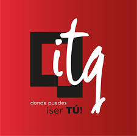
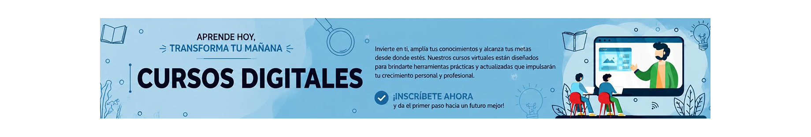

Aprende
Accede a cursos virtuales organizados por lecciones y desarrolla nuevos conocimientos mediante contenidos preparados por los instructores.

Formamos tu propósito de vida

Asistente: Hola 👋 ¿En qué puedo ayudarte?
Explora cursos virtuales, accede a contenidos organizados por lecciones y desarrolla nuevas competencias mediante una experiencia de aprendizaje diseñada para la comunidad del Instituto Tecnológico Quito.
Accede a cursos virtuales organizados por lecciones y desarrolla nuevos conocimientos mediante contenidos preparados por los instructores.
Visualiza las lecciones del curso y avanza según tu disponibilidad, permitiéndote continuar tu proceso de aprendizaje de forma flexible.
Cada curso representa una oportunidad para adquirir nuevas habilidades y continuar tu formación mediante experiencias de aprendizaje organizadas.
Sí. Para inscribirte, realizar el seguimiento de tu progreso y acceder a las funcionalidades de la plataforma es necesario crear una cuenta de usuario.
Una vez que hayas iniciado sesión, ingresa al catálogo de cursos y selecciona el curso de tu interés. Desde allí podrás realizar tu inscripción y comenzar tu proceso de aprendizaje.
Sí. Puedes inscribirte en todos los cursos que se encuentren disponibles dentro de la plataforma y avanzar en ellos de acuerdo con tu disponibilidad.
Cada curso está organizado en lecciones. Puedes acceder a ellas desde la plataforma y avanzar de acuerdo con la organización definida para ese curso y tu propio ritmo de aprendizaje.
No necesariamente. Cada instructor define la estructura de su curso. Algunos cursos pueden incluir evaluaciones, mientras que otros se enfocan únicamente en el desarrollo de contenidos y actividades de aprendizaje.
No. La disponibilidad del certificado depende de la configuración realizada por el instructor y de las características específicas de cada curso.
Si olvidaste tu contraseña, comunícate con el administrador de la plataforma para solicitar el restablecimiento de tu acceso.
No siempre. Algunos cursos incluyen únicamente las lecciones principales con video; el contenido complementario depende de lo que configure cada instructor.
Si el curso lo requiere, la plataforma solicitará completar la encuesta de satisfacción una única vez. Una vez registrada, no volverá a mostrarse en otros cursos.
La Plataforma Virtual de Aprendizaje fue desarrollada por estudiantes de Segundo Nivel de la carrera de Desarrollo de Software, modalidad nocturna virtual, del Instituto Superior Tecnológico Quito, como parte del Proyecto de Vinculación con la Sociedad "TransformaTec - Mantenimiento Tecnológico Comunitario y Alfabetización Digital".